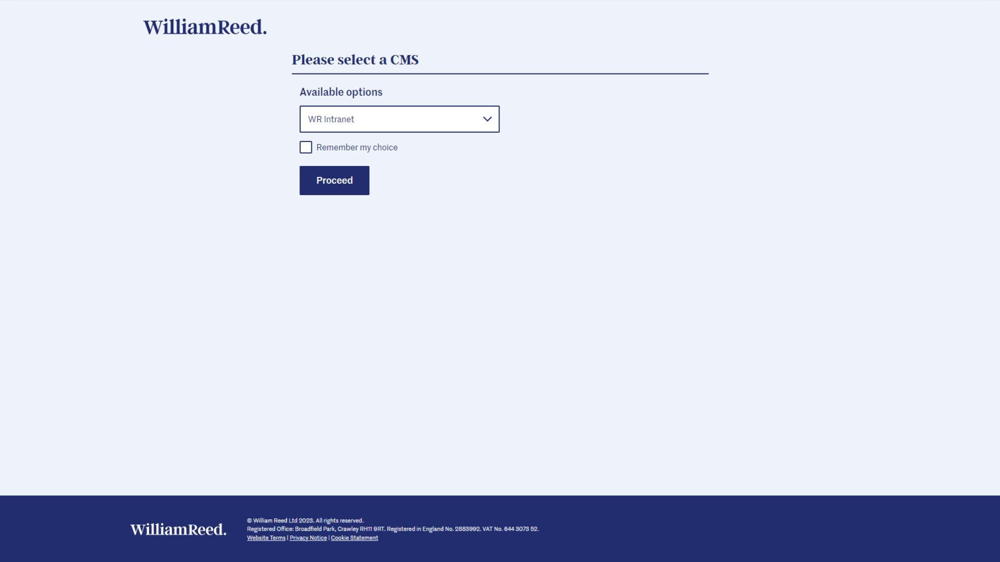
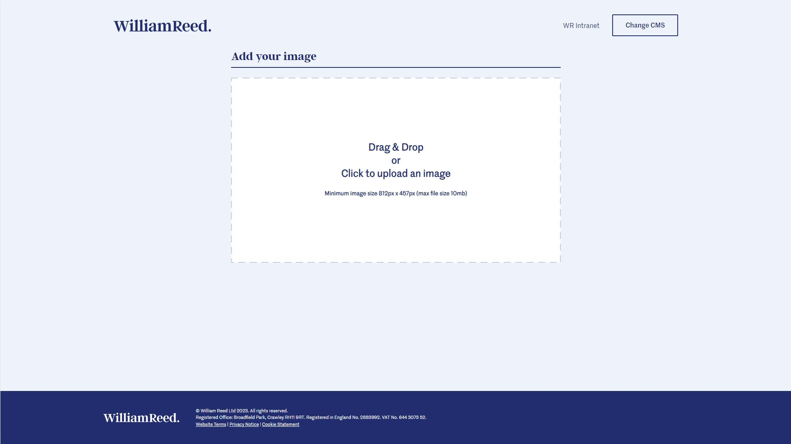
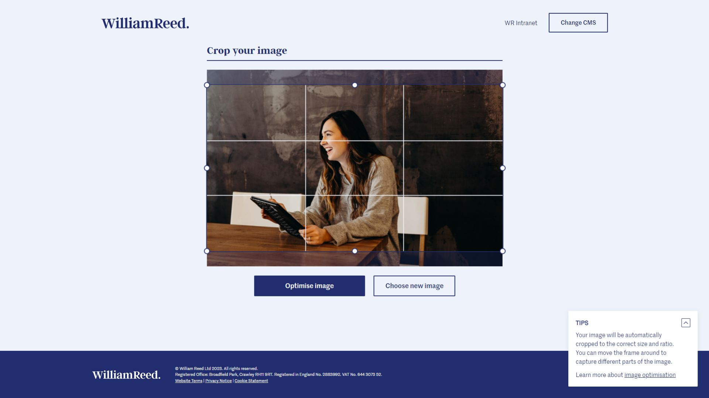

The Brief
The task at hand was to design and develop an image cropping tool for William Reed employees. This tool aimed to facilitate the correct cropping and exporting of images destined for various brand websites and content management systems.
Emphasis was placed on simplicity, ensuring a clean and user-friendly interface with minimal steps. Additionally, a key focus was on reducing webpage loading times by incorporating image optimisation for the web.
Functionality
The tool operates by allowing users to choose their preferred content management system and upload their selected image. Each CMS has predetermined image dimensions, ensuring the exported image aligns with the system's requirements. The tool then optimises the image into a JPEG format.
The Outcome
The result is a sleek, well-designed product that is not only easy to use but also meets the specific needs of the company. It's an accessible solution that successfully addresses image cropping and optimisation for various platforms."
  